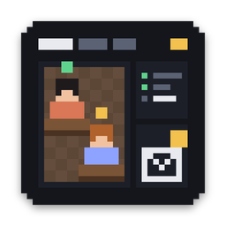
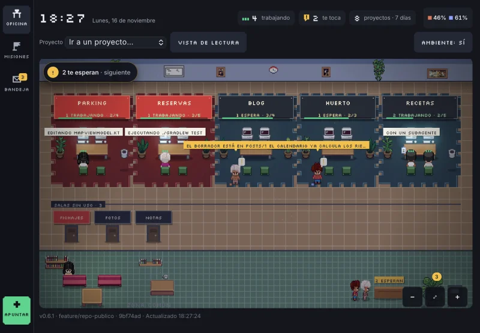

Dashboard
Tus sesiones de Codex y Claude Code, en una oficina pixel art. Mira quién te espera y contesta desde la tablet.

Tus sesiones de Codex y Claude Code, en una oficina pixel art. Mira quién te espera y contesta desde la tablet.
